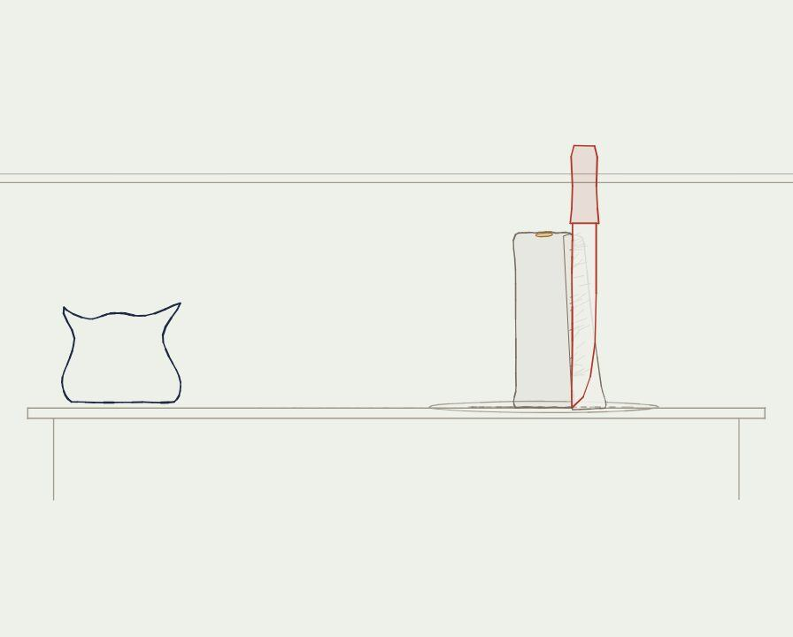
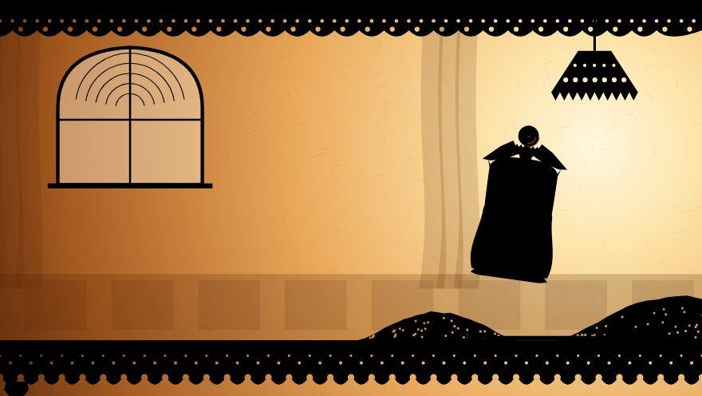
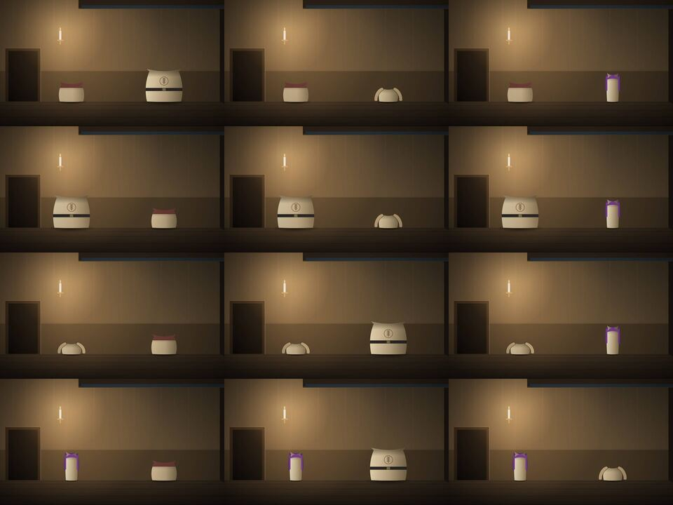
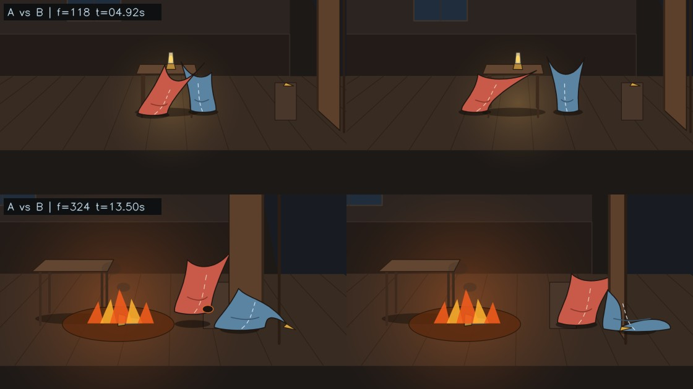
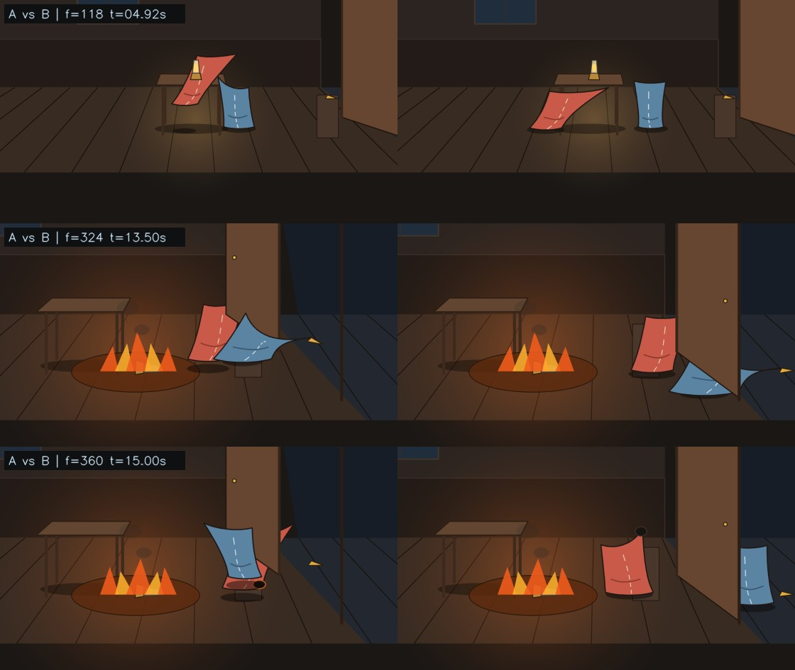

Thirty-eight entries on the burned house, each with the thing it was read from
Watson Hartsoe · entries 1–20 kept with Claude (10 Nov 2026, second pass) · entries 21–38 added 11 Nov 2026, third pass Entries 1 to 20 stand unaltered. Entries 21 to 26 follow the evening build of 10 November; entries 27 to 32 open the neighbouring repositories on 11 November; entries 33 to 38 read zettle.md and xzet.md against them.
How the entries are kept
One entry records one thing: a file, a number, a frame, a message.
Every entry shows its exhibit: the lines of code, the image, the table or the diagram it was read from, with the file path.
The entry says what is there. Where it goes beyond what was opened, a box says what was not checked.
Entries stand in order of occurrence.
MEASURED opened, run or counted todaySTRUCTURAL follows from how the thing is builtREPORTED stated by a source, not checkedUNKNOWN looked for and not found
What the second pass changed
Opening the files changed three entries that the first pass had taken from the project's pages.
Entry 7. The critic folder holds seventeen round files, and four of six films passed narrowly in round one. The page says eighteen rounds.
Entry 11. The page says Belindo takes over most violent deeds under symbolic reasons. In the page's own data his share of tying and strangling falls in that mode, and no share exceeds 0.39.
Entry 4. The first pass implied the prompts were named after Anthropic's system. The repository only shows the word appearing eleven days after the post.
What the third pass changed
Opening the published Lab 7 index and the local build answered three things left open on 10 November and exposed one silent split.
Entry 19 and Entry 31. The dictated word semaphore was already in our own voice in film 18 of Lab 7 as semascope, grounded in Lem's chapter on mimesis.
Entry 13 and Entry 22. The online story figure 8,874,296,672,256 divides with zero remainder by 126; the other factor is 126 minus 14,000.
Entry 30 and Entry 32. Before we specified a minimum viable video-text or a three-column evidence ledger, Lab 7 already held a 32-film reader titled The Cyberiad · a videotext and a film whose archivist rules her book into Shown, Remembered, and an empty column called Established.
Entry 28. The house's two existing ledgers (bolas/live/ledger.js and by-what-light/film-src/engine.js) disagree on when knifing kills, whether incitement kills, and whether rooms are fixed or chosen.
Entries 33–38. Opening zettle.md (26 distinct Zettels across 68 pasted blocks) shows that the semiotic case for the bare flour-sack room, the cognitive case for hiding deed titles (verbal overshadowing), the 1977 William Skyvington letters, Dantès's negative fortress at the close of “Cybernetics and Ghosts,” and Calvino's Thekla warning against recursive scaffolding were already written down in our own notes.
The entries
011930sBurbank
The sack
The brief every swarm receives calls the flour sack the oldest test in the animation studio and dates it to the 1930s: a body with no face, no limbs and no fingers. The image below is the project's own sack, drawn as one closed line, with the tower of flour and the knife.

flour-tower/stills/07-4.1.jpg · SCION 07 film at 4.1 s
the Disney flour sack (1930s), a body with no face, no limbs and no fingers,
whose mood has to read through weight, silhouette, line of action,
and four corners that drag behind it.
flour-tower/BRIEF.md, first paragraph (excerpt)
A body with nothing to act with except its weight.
Not checked. The 1930s studio drawings themselves. The date and description are the brief's.
REPORTED project brief, flour-tower/BRIEF.md
021973Paris
The request
Secondary sources describe a vague request from IBM in Paris in 1973 about how far a story could be written with a computer, and a first printing in the Italian edition of Playboy that year. The chain below is what those sources state.
IBM request, Paris, 1973
story written
Italian Playboy, 1973
“Prose and Anticombinatorics” in Motte, Oulipo: A Primer, 1986
Numbers in the Dark, trans. Parks, 1995
Publication path as stated by the sources. Nothing here was read in the original.
The question came from a manufacturer and the answer went to a newsstand.
Not checked. The wording of IBM's request, the Playboy issue, and whether the 1973 text matches the 1995 translation.
REPORTED secondary sources read online, 10 Nov
031973the story
The index
The deed bank stores the twelve deeds as an array in the index's order, which is alphabetical in English. It stores the four tenants as four letters. Nothing in either array records time.
const NAMES=['Blackmail','Drugging','Incitement to Suicide','Knifing','Prostitution',
'Threatening with a Gun','Tying and Gagging','Rape','Seduction','Slander','Snooping','Strangling'];
const IDS=['R','B','I','O'],WHO={R:'Roessler',B:'Belindo',I:'Inigo',O:'Ogiva'};
const PAIRS=[];for(const a of IDS)for(const v of IDS)if(a!==v)PAIRS.push([a,v]); // 12 ordered pairs
live/player.html, lines 66–68
The fire left the alphabet and took the sequence.
Not checked. Whether the Italian index is in the same order as the English one.
STRUCTURAL live/player.html
0413–24 Oct 2026two repositories
A name used twice
Press coverage dates Anthropic's post on Scion, its replacement for Git, to 13 October. In this repository the word SCION first appears in a commit of 24 October, for a set of 54 animation prompts. Each prompt has the same outline, shown below from the Reiniger prompt.
header: lineage · interpretation · 5 inputs
1 creative theorem to prove
2 native formal language
3 assemble the smallest capable swarm
4 hard proof scene, before scaling
5 the bar and acceptance tribunal
6 evolving inquiry
7 discovery and expansion
8 deliverable contract
inherited doctrine, 15 points
START NOW
Section headings of paeleo/scion/swarms.json, swarm 2 (1,196 words).
2026-10-24 58efb8cc PAELEO: a new channel, its three scales, and PAE-00 The threshold
2026-10-24 6603ed81 SCION: the swarm operator written up, and all 54 swarms shown through the dog
git log origin/main -- paeleo/scion (oldest two)
What broke was built for the rate at which people make things.
Not checked. Whether the prompts existed under this name before 24 October, and whether the name was taken from Anthropic's system. The fetched history starts on 20 October.
REPORTED press coverage; git log of bolas
0530 Oct 2026PAE-03
The tower leans too late
The score puts the tower's lean and the sack's notice at the same instant, 6.5 s. The critic of the Foldès film measured the lean after that instant and found it under one degree. The verdict was a narrow pass with this noted against it.
The cause is weak, though. The tower barely leans: its angle is 0.001 rad
at 7.0 and 0.012 rad at 9.0, under one degree.
flour-tower/critic/07/round1.md (excerpt)
The sack noticed at 6.5 seconds. The tower had moved a hundredth of a radian by 9.
Not checked. The project page says five of six films had this fault. Only film 07's critic file was read.
MEASURED one critic file read; the page's count not checked
0630 Oct 2026PAE-03
The penny
The score says the penny drops when the tower falls. The critic of the Reiniger film reports the penny thrown upward to about 1.36 m. A later still from the same film shows the penny resting on the sack.
{ "t": 21.0, "world": "cut 4; the tower falls; the penny drops", "choice": "" }
flour-tower/score.json, event 7
(2) The penny is thrown up to about 1.36 m
flour-tower/critic/02/round1.md, line 11 (excerpt)

flour-tower/stills/02-22.5.jpg · SCION 02 film at 22.5 s
The score says drops. The critic saw it thrown.
Not checked. The page says four films threw or carried the penny. One critic file was searched for it.
MEASURED score and one critic file
0730 Oct 2026PAE-03
The checks and the critics
Each film writes a table of its own measurements. Each critic file opens with a verdict. There are seventeen round files. In round one, four films passed narrowly and two did not pass. One sentence was found in which a critic sets the table against the picture.
Film
Round 1
Round 2
Round 3
02 Reiniger
pass, narrow
pass, narrow
pass, narrow
06 Whitney
does not pass
does not pass
pass, narrow
07 Foldès
pass, narrow
pass
none
08 Sutherland
does not pass
pass, narrow
pass, narrow
14 Pose2Pose
pass, narrow
pass, narrow
pass, narrow
41 Soft body
pass, narrow
pass, narrow
pass
First line of each file in flour-tower/critic/. Seventeen files.
PAE_CHECK accounts for them as "slicesOffPlate", but the picture shows them disappearing.
flour-tower/critic/07/round1.md, line 11 (excerpt)
The table counted the slices as off the plate. The picture showed them vanish.
Not checked. The page reports eighteen rounds and says every film's checks passed rows a critic failed. The files show seventeen rounds, and I found one such sentence. The other sixteen files were not read through.
MEASURED file listing and first lines of 17 critic files
086 Nov 2026PAE-04
A film is a number
Two functions turn a list of twelve pair numbers into one integer and back. Decoding the number printed under the bank's sample film gives the cast below. Each arrow is doer to victim.
function enc(d){let n=0;for(const x of d)n=n*12+x;return n}
function dec(n){const d=[];for(let k=0;k<12;k++){d.unshift(n%12);n=Math.floor(n/12)}return d}
live/player.html, lines 72–73 (film.html line 429 has the same enc)
I
II
III
IV
V
VI
VII
VIII
IX
X
XI
XII
I→B
O→I
R→B
I→R
I→O
O→I
I→O
R→B
O→I
I→O
R→I
B→I
dec(5885051002576) = 7,11,0,6,8,11,8,0,11,8,1,4, read against PAIRS. Columns are the deeds in index order.
The title of each film is its position in the count.
Not checked. That the rendered mp4 labelled with this number shows this cast. The video was not watched.
MEASURED functions read; one number decoded today
096 Nov 2026PAE-04
Deed VIII
The source file for the eighth deed opens with a description of its layers. A curtain is one of them, and it is applied to the two sack layers as a matte that removes them. The sheet shows twelve frames of a room with a doorway and one candle.
// The deed is the part of the composite that is held out. Nothing is drawn or heard
// behind the curtain while it is down; the only evidence is what the matte releases.
// Numeric invariant: for 2.95<=t<=4.75 the curtain matte covers both sacks' full boxes ...
live/deeds/08-assault.js, lines 1–3 and 14

sheets/08.jpg · twelve frames of deed VIII across pairs
One of the twelve is made of what is withheld.
Not checked. The deed was not played. The invariant is the comment's claim.
REPORTED source comment and contact sheet
106 Nov 2026PAE-04
The rope leaves a mark
The ledger has one row per deed. Each row lists the marks left on the victim, the changes to each mind, and one piece of evidence. Tying leaves rope and gag on the victim and a rope as evidence. The consequence file says the rope's imprint never leaves.
The numbers page says that under symbolic reasons Belindo takes over most of the violent deeds. Its own data give his share of five deeds in each mode. Under symbolic reasons his share of knifing and of the gun rises, and his share of tying and strangling falls. No share is above 0.39.
Deed
practical
hybrid
symbolic
IV knifing
0.073
0.159
0.386
VI gun
0.197
0.235
0.368
VII tying
0.701
0.520
0.359
VIII assault
0.286
0.295
0.349
XII strangling
0.647
0.495
0.322
Belindo's share as doer, D.million[mode].doer, second column of each row. About 333,333 stories per mode. Means: 0.522, 0.455, 0.347.
let U=Math.pow(Math.max(1e-4,P),pie.P)*Math.pow(Math.max(1e-4,Sy),1-pie.P)*C;
...
const tau=.08+pie.E*1.6; const lg=U.map(u=>Math.log(u)/tau); // softmax over the 12 pairs
live/agents.js, lines 33 and 58 (excerpt)
PIE dial: P, I, E
utility of each of 12 pairs: practicalP × symbolic1−P
temperature from E
softmax
one pair chosen for this deed
ledger updated
How a tenant's choice is computed, read from agents.js.
Under symbolic reasons Belindo does about a third of each violent deed.
Not checked. That the second column is Belindo. It follows the order R, B, I, O used in ledger.js and in the figure's legend.
MEASURED data object in live/numbers.html, read today
126 Nov 2026PAE-04
Row thirteen
The deed bank's index has twelve rows. Its code handles a thirteenth index value with a fixed line of text.
if(k===12){el.innerHTML='<b>13 · Arson</b> · the house burns; the index does not say who';return}
live/player.html, line 85 (excerpt)
The thirteenth row is one line of code and names no one.
STRUCTURAL live/player.html
1310 Nov 202610:38
Two wrong totals
The numbers page quotes Wikipedia's figure for the narrator's total. An English text read online has a figure one digit longer. Neither equals 12 to the 12th. A summarising tool used this morning reported a count on a project page as 34 digits long.
12n ** 12n -> 8916100448256
numbers.html, citing Wikipedia 874,296,672,256
English text read online 8,874,296,672,256
"3790040669283834371506176".length -> 25
node, 10 Nov
Three figures for one number, and a 25-digit count reported as 34.
Not checked. The figure printed in the Parks translation.
MEASURED computed today
1410 Nov 202610:42
The price moves
A counter enumerates the five deeds the rules touch and weights each case. With every weight at 1 the widow's life policy pays in 84.0 percent of stories. With the film's five rules it pays in 79.4. The count of surviving stories equals the figure on the numbers page.
question: what does each policy pay
lineage prompt
genome (YAML)
formal echo
counter in three independent groups
check: 23/144, 1/12, and 2,663,172,255,744
The steps taken in the session, in order.
function wA(i,k,g,t,s,w){let x=1;
if(VIC[s]===3)x*=w[0]; // Belindo is strangled
if(VIC[t]===3&&VIC[g]!==3)x*=w[1]; // Belindo tied with no gun on him
...
if(PER[k]===3)x*=w[7]; // Belindo uses a knife
if(VIC[k]===VIC[s])x*=w[8]; // one victim strangled and knifed
return x;}
live/policies.html, weight of one case (i incitement, k knifing, g gun, t tying, s strangling)
no rules
84.0%
five rules
79.4%
Widow's life policy: share of stories in which Ogiva neither knifes nor strangles the widow.
A rule about the wrestler changes what the daughter is worth.
Not checked. The page has not been opened in a browser. The arsonist prior is the modeller's choice.
MEASURED exact enumeration; two counters agree
1510 Nov 202610:49
Hard to present
The author writes that the project is increasingly hard to present. The pages define four different sets of colours. Three rule sets give three counts.
Case page (before 13:47)#f1f2f3 #111417 #8a3a2c index.html
First payout engine#e6ecee #14242e #1f5a8a this session, since replaced
Background, ink and accent as written in each file's :root block.
Rule set
Stories
Where
film's five rules
2,663,172,255,744
numbers page
ledger: the dead and the tied do not act
3,316,025,558,016
numbers page
room, light and witness
3,790,040,669,283,834,371,506,176
By What Light
Three counts, each introduced on its page as the count under the rules.
Four palettes and three things called the rules.
MEASURED stylesheets and pages compared
1610 Nov 202611:49
The gate
The author writes: push it here. The agent calls the merge of its own pull request. The call returns the text below. No other route to main was tried.
Permission for this action was denied by the Claude Code auto mode classifier.
Reason: [Merge Without Review].
tool result, 11:49
The merge was refused with three words in brackets.
MEASURED tool result
1710 Nov 202613:47
Two hands on one page
At 13:47 the author commits a rebuilt case page. The agent's branch had changed the same file. The merge reports a conflict at one place. The author's lines are kept.
2026-11-10 13:47:52 -0500 53959783 Watson Hartsoe
Unify the Abominable House case file
CONFLICT (content): Merge conflict in paeleo/abominable-house/index.html
138:<<<<<<< HEAD
140:=======
141:>>>>>>> origin/main
git, 10 Nov
One file, two versions, a conflict at line 138.
MEASURED git output
1810 Nov 202618:07
The notes arrive by voice
The notes are dictated. Five words arrive in a form that needed a reading. The right-hand column is the reading taken, and each is a guess.
As written
Read as
flower animation test
flour sack test
Giertych
Geertz
Lim Stanislaw's Baitistics
Stanisław Lem, bitistics
BDI work of Demi Hasabis
BDI: Bratman; Rao and Georgeff
Legos
the LDraw work
From the message of 18:07.
Five words needed a reading before the paper could cite them.
Not checked. Whether each reading is what was said. The author has not confirmed them.
MEASURED the author's dictated notes
1910 Nov 202618:07
The semaphore is not found
The notes say Lem covers a semaphore in his bitistics. One search was run. It returned pages on Imaginary Magnitude and its preface on bitic literature. The word semaphore is in none of the returned excerpts.
query: Stanisław Lem "History of Bitic Literature" bitistics Imaginary Magnitude
found: the preface; the term "bitistics" in a publisher's description
absent: "semaphore" in every excerpt returned
search, 18:07
One search, and the word was not in it.
Not checked. The book itself. One search of excerpts cannot show that the passage does not exist.
UNKNOWN one web search
2010 Nov 202618:09
The thesis arrives early
At 18:09 a draft is published with a thesis and five numbered claims. At 18:25 the author replies: too early, too orderly.
A search of the Lisbon conference abstracts turns up another Italian text counted in the eight trillions. Elena Pierazzo multiplies the slot variants across sixteen cantos of Sebastiano Chiesa's Capitolo dei Frati and prints 8,255,648,563,200, then clusters witnesses to transcribe an average manuscript per group. Dividing her figure and 1212 by their greatest common divisor leaves 25 and 27.
"Once all the options are combined, we find that we can have up to
8,255,648,563,200 possible combinations ... This 'average manuscript'
will be considered as the reference copy of each cluster."
gcd(8255648563200n, 8916100448256n) -> 330225942528n // 2^24 * 3^9
8255648563200n / 330225942528n -> 25n
8916100448256n / 330225942528n -> 27n
BoA_DH2025.pdf, pp. 1014–1015 (PDF pp. 1022–1023); node BigInt check
Two Italian counts in the eight trillions stand in the ratio twenty-five to twenty-seven.
Not checked. Which sixteen canto slot counts Pierazzo multiplied to reach 224 × 39 × 52. Only the abstract is in the book.
MEASURED BoA_DH2025.pdf and node
2210 Nov 202621:18 · node
Fourteen thousand missing
The twelve-digit and thirteen-digit figures from Entry 13 are tested against factors of 1212. Dividing 8,874,296,672,256 by 126 leaves no remainder. The quotient is 2,971,984, which is 126 short by 14,000, a slip in two middle digits when squaring 2,985,984 past an eight-digit display.
node, 10 Nov; recorded in pae04_abominable_house_scion_run.md, lines 92–95
The wrong total divides cleanly by twelve to the sixth.
Not checked. Whether the 1973 Italian printing already carries 8,874,296,672,256, and whether Calvino squared 126 by hand. The online English story page is behind a Cloudflare challenge and was not bypassed.
MEASURED exact division in node
2310 Nov 202622:30 · C1 & C2
Two memories of 1973
Esther Calvino's preface and Paul Braffort's memoir are read side by side instead of through summaries. Esther Calvino places the story in the Italian Playboy in 1973 and writes that Calvino carried out the computer's operations himself. Braffort puts first publication in the American Playboy, quotes Marcel Bénabou dating Calvino's outline to an Oulipo lunch on 8 November 1972, and describes Calvino visiting his lab at Orsay to watch the first tests of a program.
C1 (Esther Calvino): "carrying out all the operations the computer was
supposed to do himself. The story was finally published in the Italian
edition of Playboy."
C2 (Paul Braffort): "L'incendie de la maison abominable (publié
initialement dans l'édition américaine de Playboy) ... dès sa première
participation à un déjeuner de l'Oulipo, le 8 novembre 1972 ... il vint
me voir à Orsay ... pour assister aux premiers tests d'un programme."
scratch/C1.txt, lines 24–26; scratch/C2.txt, lines 44–49 and 153–166
The collaborator kept the date of the lunch and changed the country of the magazine.
Not checked. Barenghi's 1994 Meridiani dossier note, which Braffort cites at secondhand, and the 1973 Italian Playboy issue itself.
REPORTED two primary paratexts compared
2410 Nov 202622:42 · vtx01
The sack ties itself in a bow
A two-sack lamp room is built under vtx01_build to test one changed goal. The first render fails its own checks and is kept in revisions/rev1_rejected/. In Case A the leaping sack misses the lamp by 163 pixels; in Case B at frame 324 the fleeing sack's ear corners cross its spine, folding the outline into a ribbon with a 37 percent area loss.

vtx01_build/revisions/rev1_rejected/ab_focus_comparison_rev1_rejected.png (crop: f=118 and f=324)
vtx01_build/revisions/rev1_rejected/validation_report_rev1_failed.json, lines 22–23 and 40–43
When one ear crossed the other, the sack turned into a ribbon.
Not checked. How a human viewer reads the rejected clip. It failed the geometric gate first.
MEASURED rendered frames and validator output
2510 Nov 202622:56 · vtx01
One patch, forty-six paths
In revision two, a JSON patch changes one authored goal from assist_steadying to deliberate_strike and propagates across forty-six permitted downstream fields. Frames 0 to 76 are identical; volume drift and grounded foot-slide read zero across all 384 frames; the carried wooden wedge stays locked to the sack's corner across all 73 carry frames. In Case A the door stays propped open from inside; in Case B the fleeing sack passes into the hall, pulls the door shut in front of itself, and wedges it from outside.

vtx01_build/renders/ab_focus_comparison_rev2_accepted.png (crop: f=118 and f=324, Case A over Case B)
Seventy-seven identical frames, one changed goal, and a door wedged from the other side.
Not checked. Whether an unbriefed person watching without labels calls Case A accidental and Case B deliberate. The blind tab in viewer/index.html has zero human ballots.
MEASURED validator report, mp4 renders, and contact sheets
2610 Nov 202622:57 · vtx01
What the file knows and what the camera shows
Four synthetic clauses are run against Case A and Case B in two columns. The first column reads the authored world state; the second reads only corroborated camera evidence. Fire coverage (P1) pays in both columns because flame fills the room. Accidental indemnity (P2) and deliberate liability (P3) flip between PAY and NO_PAY in the world column and stay UNKNOWN in the evidence column.
The file knows why the lamp fell; the policy column has to wait for a witness.
Not checked. Calvino's own four policy wordings against these synthetic clauses. P1–P4 were written for the two-sack test.
STRUCTURAL vtx01_build/traces/policy_traces.json
2711 Nov 202617:48 · Lab 7 · 28
The stone from the track
The presenter's page from yesterday marked Lab 7 film 28 as an unread neighbour, though the rebuilt case page already links to it. Opening house-is-occupied/index.html shows a complete sequel: at 21:06 Waldemar's printer outputs a 160×90 dot picture sampled from the film's own 21:17 rescue frame; Reserve Mutual's 21:16 call orders the stockroom shutter closed; the replay refuses Waldemar as Observer. Cannot be entered; Skiller tells him he has signed as a participant; at 05:52 the printer strikes Case zero one three; and the widow props the door open with a stone.
The replay. Observer. Cannot be entered.
Skiller. You've just signed as a participant.
Waldemar. Ada. Case zero one three.
Narrator. The widow sets a stone from the track against the door, and it stays open.
2700-fa26/LAB 7 - CLASSES/house-is-occupied/index.html, lines 49 and 59 (excerpts)
We built a wooden wedge for the door on Tuesday; the widow already had a stone from the track.
Not checked. The video file house-is-occupied.mp4 itself. Only the published HTML page and full script were read.
MEASURED published page read today
2811 Nov 202617:48 · two engines
Two ways to die by a knife
The house already has two JavaScript ledgers in two repositories: live/ledger.js in bolas and film-src/engine.js in By What Light. Set side by side, they list the four letters in different orders and disagree on five rules of the world, including when a knifing is fatal and whether incitement ever kills.
12 kinds; flower and keyhole fade in 2 beats (line 62)
5 kinds; none fade (line 6)
Second deed by same doer
weighted by PIE and memory (agents.js)
only against one known guilty (line 28)
bolas/paeleo/abominable-house/live/ledger.js vs. 2700-fa26/LAB 7 - CLASSES/by-what-light/film-src/engine.js
Two ledgers for the same house disagree on what it takes to die by a knife.
MEASURED both engine files read line by line
2911 Nov 202617:52 · three benches
Three halves of one machine
Comparing flour-tower/workbench.html, abominable-house/live/ledger.js, and vtx01_build/src/vtx_engine.js shows that the minimum viable video-text we spent yesterday specifying already exists in three disconnected pieces across our own folders.
memories(), observe(), PIE softmax, 7 Barthes levers(w) (lines 22–46, 103)
Single-line JSON patch, carry lock & blind ballot
vtx01_build/
patch_a_to_b_goal.json, 73-frame carry check, UNKNOWN camera column, viewer/
Three files across PAE-03, PAE-04, and vtx01_build
The machine we proposed to build was already sitting in three rooms of our own folders.
STRUCTURAL three codebases compared
3011 Nov 202617:53 · Lab 7 · index
Already titled a videotext
Opening 2700-fa26/LAB 7 - CLASSES/lineage/index.html reveals its HTML title on line 6: The Cyberiad · a videotext. It already couples thirty-two films to their scripts in two directions—scrolling the text seeks the video, playing the video scrolls the page, and a button switches to film alone—under three headings that state our research brief in plain English.
<title>The Cyberiad · a videotext</title>
...
EXPERIMENT I · When Words Operate
EXPERIMENT II · When Models Become Worlds
EXPERIMENT III · When Description Exceeds Understanding
...
// ---------- scroll moves the film ----------
// ---------- play moves the page ----------
2700-fa26/LAB 7 - CLASSES/lineage/index.html, lines 6, 179, and 245–258
We wrote a specification for a video-text without opening the file already titled a videotext.
MEASURED lineage/index.html read today
3111 Nov 202617:55 · Lab 7 · 18
Semascope, in our own voice
Entry 19 ran a web search for a semaphore in Lem's bitistics and came back empty. Inside lineage/index.html sit five films on Lem's History of Bitic Literature that we had already made, four of them marked Grounded in Lem's text. At 189.72 seconds of film 18 (Monoetics and Mimesis), Rambellais names the instrument that lets researchers inspect the machine's woven body of meanings between input and translation: a semascope. Speech-to-text at 18:07 yesterday turned semascope into semaphore.
{'t0': 189.72, 't1': 195.83, 'who': 'Rambellais',
'say': 'Two researchers found that this body could be seen, with an instrument called a semascope.'}
{'t0': 196.53, 't1': 202.34, 'who': 'Rambellais',
'say': 'It looks like a mass of many shells, woven from billions of glowing threads of meaning.'}
The word missing from the web search was already spoken at three minutes ten of film eighteen.
Not checked. Michael Kandel's or Marc E. Heine's printed page number in Imaginary Magnitude. Film 18 states it is a paraphrase grounded in Lem's text.
MEASURED D.films["bitic-mimesis"] in lineage/index.html
3211 Nov 202617:55 · Lab 7 · 25
Shown, remembered, established
Seven slots after Monoetics and Mimesis in the same index stands film 25, The Perfect Description of an Empty Room. A street is rebuilt from forty-one empty-room photographs, then revised from conflicting tenant memories until number seven has two kitchens. Sent to choose one kitchen as the official past, the Archivist rules her ledger into three columns—Shown, Remembered, and Established—leaves the third empty, and keeps both rooms side by side.
The Archivist. Shown, for what a photograph shows. Remembered, for what a person says.
The Archivist. Established.
Narrator. Nothing went into the third column. Nothing the Bureau held could put it there.
The Archivist. A more convincing reconstruction is not a more trustworthy one.
The archivist in film twenty-five had already ruled the three columns of this journal.
MEASURED D.films["empty-room"] in lineage/index.html
3311 Nov 202618:05 · zettle.md
Sixty-eight cards, twenty-six distinct
Opening zettle.md (6,717 lines) beside xzet.md (509 lines) turns up a Zettelkasten on Calvino, Jonathan Blow, Oulipo, and AI that had not been joined to the house pages. Counting identifiers shows sixty-eight ZETTEL blocks and twenty-six distinct cards: M01–M05 are pasted nine times across lines 1–4554 (and once cleanly in xzet.md), G01 and G02 start once at line 4559 before restarting in full at line 4667, and nineteen further cards follow once each to line 6717.
Series
Lines in zettle.md
Blocks
Distinct IDs
Subject
ZTL-CALVINO-BLOW-M01..M05
1–4554 (×9; once in xzet.md)
45
5
Magic objects, Barthes reality effect, Dantès vs. Faria, Bartleby
ZTL-CALVINO-AI-G01..G05
4559–5144 (G01–G02 twice)
7
5
Propp gates, 2025 “ghost” inversion, Yuk Hui & Lem's Non Serviam, Llull/Oulipo
ZTL-CALVINO-BLOW-R01..R07
5145–5852
7
7
1973 house & Skyvington, Braid, Ryan, VR camera, Thekla, verbal overshadowing, story volumes
zettle.md (6,717 lines) and xzet.md (509 lines), counted in Python
Sixty-eight cards in the file, and twenty-six once the ninefold paste is counted.
MEASURED zettle.md and xzet.md
3411 Nov 202618:06 · ZTL-R01
Arno, Baby, Clem and Skyvington
Card ZTL-CALVINO-BLOW-R01 already holds the 1973–1977 trail left open in Entry 2 and Entry 23. Through Dennis Duncan (2012) it records Calvino's four English-alphabet placeholder names (Arno, Baby, Clem, Dani), the temporal bug that broke the first specification—Clem buying sexual favors from Dani after her throat had been cut—and Calvino's pairing of machine anticombinatorics with a human Lucretian clinamen. Through Susie Cronin (2017) it adds a second programmer after Braffort: former IBM programmer William Skyvington, whose unpublished letters to Calvino date to January 1977.
"It is clear, he admits, that the algorithm requires further refinement,
since in its current version it allows Clem to buy sexual favors from Dani
even after the latter has had her throat cut." (Duncan 2012, p. 102)
Susie Cronin — "Cybernetic Collaborations, Literature Machines and Italo
Calvino's 'L'incendio della casa abominevole'" — The Italianist 37, no. 1
(2017): 69–85 ... William Skyvington's January 1977 letters to Calvino.
zettle.md, lines 5154–5159 and 5212–5223 (ZTL-CALVINO-BLOW-R01)
A second programmer wrote to Calvino in January 1977, and his name was already in our own notes.
Not checked. Cronin's 2017 article in The Italianist and Skyvington's archival letters themselves. Both are read here through zettle.md.
REPORTED zettle.md, ZTL-CALVINO-BLOW-R01
3511 Nov 202618:06 · ZTL-M04 & G02
Faria, Dantès, and the wrong ghost
Two cards check Calvino's 1967 lecture “Cybernetics and Ghosts” against the way it is quoted around generative AI. Card G02 catches two 2025 talks stopping halfway through the essay and turning Calvino's ghosts into dead human authors haunting a training corpus; in the second half of the 1967 text, the machine holds no human past and the ghosts belong to the reader's unconscious when a dry permutation strikes taboo matter. Card M04 reads the essay's closing page (Saggi I, p. 225): Abbé Faria tunnels blindly into deeper cells, while Edmond Dantès builds in thought a fortress from which escape is impossible and looks for the point where the imagined prison does not coincide with the real one.
Ghost_Calvino1967: Shock(c, Reader) fires iff c in Permutations(Grammar)
AND Resonates(c, Unconscious(Reader, Society))
Case 1: Fortezza_pensata == Fortezza_vera => escape is impossible
Case 2: Fortezza_pensata != Fortezza_vera => escape lies at their mismatch
zettle.md, lines 350–353 (ZTL-CALVINO-BLOW-M04) and lines 4811–4815 (ZTL-CALVINO-AI-G02)
Faria digs by trial; Dantès looks for the wall where the imagined prison is stricter than the stone.
Not checked. Page 225 of Barenghi's 1995 Saggi I in the Italian edition; the quotations are taken from zettle.md.
REPORTED zettle.md, M04 and G02
3611 Nov 202618:07 · ZTL-2017-03 & M02
Why the room has to be bare
Our earlier notes gave two reasons for using a flour sack: 1930s animation practice and staging twelve crimes without human bodies. Cards M02 and 2017-03 state a third reason that explains the failures in Entry 7 and Entry 24. In prose, naming a thing guarantees that an author selected it; in a rendered scene, walls, floors, seams, and engine artifacts appear on every frame merely to sustain space. Stripping Barthes's reality-effect props down to faceless sacks, one lamp, one wedge, and one door widens the margin Δ between authored signal and engine noise so every shift of weight can be read as meant.
Prose inscription channel: Mentioned(x) => AuthorSelected(x)
Rendered scene channel: Rendered(x) in {AuthoredSignal} U {SpatialSubstrate} U {EngineArtifact}
Required margin: Salience(AuthoredSignal) - max Salience(Substrate U Artifact) >= Delta > 0
zettle.md, lines 149–155 (ZTL-CALVINO-BLOW-M02) and lines 6092–6097 (ZTL-BLOW-2017-03)
In a sentence every named thing was chosen; in a picture the floor is there whether it means anything or not.
STRUCTURAL zettle.md, M02 and 2017-03
3711 Nov 202618:07 · ZTL-R06 & M05
Why the chapter card has to come off
Two cards supply the cognitive and textual mechanism for the blind test in Entry 25 and the curtain in Entry 9. Card R06 follows Karin Kukkonen (2024) on verbal overshadowing in Calvino's mute tarot novel The Castle of Crossed Destinies: showing a verb title before a clip locks the viewer into lexical categories and spoils perceptual reading before motion speaks. Card M05 traces Calvino's unwritten sixth lecture, Consistency, to Herman Melville's Bartleby (“I would prefer not to”)—the subtractive refusal already coded in ledger.js line 20 (refusedBy: 'B') and drawn across Deed VIII.
"images serve to suspend verbalisation ... verbal overshadowing might mean
that the fluidity and richness of visual and other impressions ... [are lost]."
— Kukkonen (2024), in ZTL-CALVINO-BLOW-R06
Consistency_positive(System): Var(RuleEvaluator across instances) = 0
Consistency_Bartleby(Author): Design_{t+1} = Design_t \ {trope} ("I would prefer not to")
zettle.md, lines 461–464 (ZTL-CALVINO-BLOW-M05) and lines 5675–5705 (ZTL-CALVINO-BLOW-R06)
Give the viewer the verb first and the word does the watching.
Not checked. Kukkonen (2024) and Esther Calvino's 1988 Lezioni americane preface in print; both are cited here from zettle.md.
REPORTED zettle.md, R06 and M05, joined to player.html and ledger.js
3811 Nov 202618:08 · ZTL-R05
Cranes pulling up cranes
Card ZTL-CALVINO-BLOW-R05 quotes Calvino's “Cities and the Sky 3” (Thekla), where visitors peer through plank fences and sackcloth screens at cranes pulling up other cranes, scaffoldings that embrace other scaffoldings, kept in perpetual construction so that its destruction cannot begin. Read alongside our own directories—fifty-four swarm prompts, seventeen critic rounds, two house ledgers, thirty-two Lab 7 films, twenty-six zettels, a slide deck, and thirty-eight journal entries while pull request #14 remains unmerged and the blind viewer ballot holds zero human responses—the card names the exact hazard of building one more rig instead of running the witness test.
"If you ask, 'Why is Thekla's construction taking such a long time?' the
inhabitants continue hoisting sacks, lowering leaded strings ... as they
answer, 'So that its destruction cannot begin.' ... he sees cranes pulling
up other cranes, scaffoldings that embrace other scaffoldings."
Italo Calvino, Invisible Cities (“Cities and the Sky 3: Thekla”), in zettle.md, lines 5577–5578 (ZTL-CALVINO-BLOW-R05)
Cranes pulling up cranes keep the scaffolding standing and the house unfinished.
STRUCTURAL zettle.md, ZTL-CALVINO-BLOW-R05, set against the repository
The lines kept, in order
01 A body with nothing to act with except its weight.
02 The question came from a manufacturer and the answer went to a newsstand.
03 The fire left the alphabet and took the sequence.
04 What broke was built for the rate at which people make things.
05 The sack noticed at 6.5 seconds. The tower had moved a hundredth of a radian by 9.
06 The score says drops. The critic saw it thrown.
07 The table counted the slices as off the plate. The picture showed them vanish.
08 The title of each film is its position in the count.
09 One of the twelve is made of what is withheld.
10 The victim's row lists rope and gag. The evidence column says rope.
11 Under symbolic reasons Belindo does about a third of each violent deed.
12 The thirteenth row is one line of code and names no one.
13 Three figures for one number, and a 25-digit count reported as 34.
14 A rule about the wrestler changes what the daughter is worth.
15 Four palettes and three things called the rules.
16 The merge was refused with three words in brackets.
17 One file, two versions, a conflict at line 138.
18 Five words needed a reading before the paper could cite them.
19 One search, and the word was not in it.
20 Five labels at 18:09. A reply at 18:25.
21 Two Italian counts in the eight trillions stand in the ratio twenty-five to twenty-seven.
22 The wrong total divides cleanly by twelve to the sixth.
23 The collaborator kept the date of the lunch and changed the country of the magazine.
24 When one ear crossed the other, the sack turned into a ribbon.
25 Seventy-seven identical frames, one changed goal, and a door wedged from the other side.
26 The file knows why the lamp fell; the policy column has to wait for a witness.
27 We built a wooden wedge for the door on Tuesday; the widow already had a stone from the track.
28 Two ledgers for the same house disagree on what it takes to die by a knife.
29 The machine we proposed to build was already sitting in three rooms of our own folders.
30 We wrote a specification for a video-text without opening the file already titled a videotext.
31 The word missing from the web search was already spoken at three minutes ten of film eighteen.
32 The archivist in film twenty-five had already ruled the three columns of this journal.
33 Sixty-eight cards in the file, and twenty-six once the ninefold paste is counted.
34 A second programmer wrote to Calvino in January 1977, and his name was already in our own notes.
35 Faria digs by trial; Dantès looks for the wall where the imagined prison is stricter than the stone.
36 In a sentence every named thing was chosen; in a picture the floor is there whether it means anything or not.
37 Give the viewer the verb first and the word does the watching.
38 Cranes pulling up cranes keep the scaffolding standing and the house unfinished.
Not yet seen
A person who has not read the story watches one deed without its chapter card—or watches Case A and Case B in the blind tab of vtx01_build/viewer/index.html—and says what was done.
The printed Parks translation (1995) and the 1973 Italian Playboy issue, opened at the narrator's total and the four policy clauses.
The other sixteen critic files in flour-tower/critic/, read through for the tower, the penny and the checks.
The three PAE-04 house mp4s and the Lab 7 mp4s as video (only the two vtx01_build lamp-room mp4s were inspected frame by frame).
Which Demis Hassabis paper was meant in the voice note of Entry 18.
Pull request #14 (whole-house.html and live/policies.html) merged to main; both URLs still return 404 on the live site today.